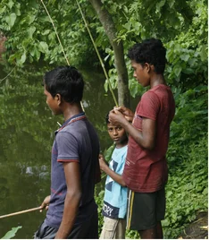

“What are your expectations?” Supriyo asked me several times before my trip to his hometown in West Bengal. At the time, I genuinely did not know how to respond. Neither did I understand what the point of the question was. One time I even answered with “Slum Dog Millionare,” referencing the award-winning movie by Danny Boyle. It basically summarized my knowledge about India up until that point, which included: crowded cities, filth, temples, and dancing sequences.
Alas! It was nowhere near to what I saw during my actual three-week trip. And I would never have been able to know without truly experiencing it firsthand. The sheer hospitality of people was remarkable. “Please, sit,” instructed gently a smiling old lady, as she pointed to the plastic stool she brought for us whilst we waited for a chicken wrap at her roadside food cart in Visakhapatnam. “We are just arriving from a 13-hour train trip. We have been sitting for many hours,” we tried to reason with her, but she smiled back, retaining her stance. “Sit.” As we sat defeated, she smirked and went back to cutting her onions.
The other aspect that intrigued me was how Indians rely heavily on each other. Our trip was somewhat semi-organized. We tended to have a vague idea of where we wanted to go, and the details were figured out on the fly. “Let me call my friend,” Supriyo would say.
And thus Supriyo's friend's cousin came along with three others, one also having a car, to show us around Gudlur and its vicinity.
My trip also exemplified how heterogeneous the Indian society is and how this is so inherent to Indians. “The only thing I know how to say in Telugu is ‘Telugu rādhu,’” remarked Supriyo as he translated it to mean “I do not speak Telugu,” Telugu being one of the languages spoken in a region called Andhra Pradesh, which also happens to be a region different from his own home. “Yeah, we really cannot understand each other,” he would continue and laugh it off as I stood baffled. In this short three-week journey, I already learned about the existence of six entirely different languages: Bengali, Hindi, Odiya, Telugu, Kannada, and Malayalam. And this diversity does not stop with the languages.
Across all of India, there are also many different religions. Some of them were familiar to me, but I got introduced to entirely new ones also, like the religion of Jainism. I also got to admire the colorful Hindu temples, the intricately designed mosques, and the beautiful Christian churches, all completely architecturally different, yet close to each other. These religions mingled so naturally with each other. “Yeah, once my grandma started praying for Jesus,” giggled Supriyo to my perplexity. Despite the contrasting nature of the languages, religion, and culture, India still seems to find a way to coexist. We, in Europe, could definitely learn this art.

To Supriyo's question, now I would say, “I expect the people to be as amicable and understanding as they were the last time.”
Follow us
Stay connected with our community and get the latest updates on events and celebrations.